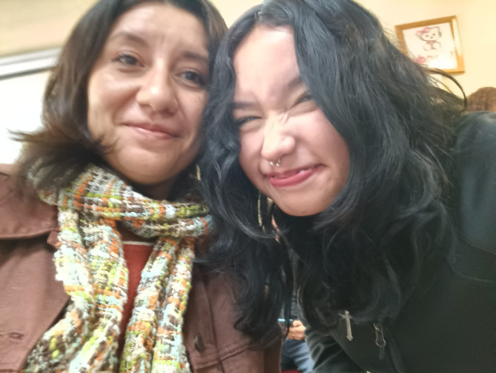

O estresarnos con las prácticas...
Será dificil aceptar que despues de 1 año, concluimos Computación Básica, y tener que dejar lo que se convirtió en "mi lugar seguro" :). Voy a extrañar pasar las clases (incluso horarios fuera de clase) dentro del laboratorio, me hizo muy feliz y disfrute mucho la materia, hasta el día de hoy los miercoles y viernes son mis días favoritos de la semana, no me voy a olvidar del tiempo que pasé aquí y mi cariño por las personas de servicio siempre estará intacto, me llevo en el corazón a la maestra Brenda y los consejos que me da, agradezco que siempre se tome el tiempo de apoyarme y sin duda, la seguiré eligiendo como mi tutora el tiempo que me quede en esta escuela, me motiva a seguir adelante y me inspira a ser mejor persona, considero que es una persona muy especial porque hace las cosas a su manera y eso le va muy bien, me siento muy contenta de haber conectado con ella desde el momento en que la conocí. Tambien el personal, que en todas las ocasiones fue adecuado y respetuoso con nosotros, o por lo menos conmigo, agradezco la ayuda que mee brindó Angie, Fernando, Fabían, Adrian y Nico, incluso la maestra Wendoline y la maestra Judith que siempre atendieron a mis preguntas cuando las solicité, todos le ponen mucho empeño a sus servicios y nos hacen sentir cómodos al trabajar y eso es algo de admirar, no en todos los laboratorios se encuentra esa familiaridad.
Las contras que puedo ver, es que a veces los equipos llegan a fallar (o solo tengo muy mala suerte), o a veces estan desordenados, es decir que tienen números que no corresponden a su maquina, pero nada con lo que no se pueda trabajar.
Finalizo agradeciendoles a todos una vez más por hacerme sentir que pertenezco al hogar que es el laboratorio de Computación, me hicieron pasar los mejores días en mi primer año y me hicieron sentir muy feliz incluso en mis peores días...

- Con amor, Yami.
Toro Luna Fernanda Yamilet 2IM10